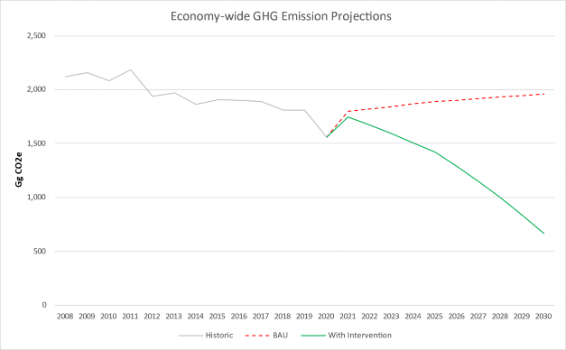

2021 Barbados NDC update - 21 July 2021
BARBADOS 2021 UPDATE OF THE FIRST NATIONALLY DETERMINED CONTRIBUTION
SUBMITTED IN FULFILLMENT OF OBLIGATONS UNDER THE PARIS AGREEMENT ON CLIMATE CHANGE
Government of Barbados
|
AOSIS |
Alliance of Small Island States |
|
AR5 |
IPCC Fifth Assessment Report |
|
BAU |
business-as-usual |
|
BBD |
Barbados dollar |
|
BNEP |
2019 Barbados National Energy Policy |
|
BNOCL |
Barbados National Oil Company Limited |
|
BPOA |
Barbados Programme of Action |
|
BWA |
Barbados Water Authority |
|
C-SERMS |
CARICOM Caribbean Sustainable Energy Roadmap and Strategy |
|
CBIT |
Capacity Building Initiative for Transparency |
|
CCCCC |
Caribbean Community Climate Change Center |
|
CCF |
Contingent Credit Facility for Natural Disaster Emergencies |
|
CCRIF-SPC |
Caribbean Catastrophe Risk Insurance Facility |
|
CHENACT |
Caribbean Hotel Energy Efficiency Action Program |
|
CVF |
Climate Vulnerable Forum |
|
CZMU |
Coastal Zone Management Unit |
|
DRR |
Disaster-risk reduction |
|
EEZ |
Exclusive Economic Zone |
|
EU-CIF |
European Union Caribbean Investment Facility |
|
EV |
Electric vehicle |
|
FiT |
Feed-in Tariff |
|
GCF |
Green Climate Fund |
|
GDP |
Gross Domestic Product |
|
GDM |
IMF-administered Global Disaster Mechanism |
|
GHG / GHGI |
Greenhouse gas / GHG Inventory |
|
GNI |
Gross National Income |
|
GOB |
Government of Barbados |
|
GWP |
Global warming potential |
|
ICTU |
Information to facilitate clarity, transparency and understanding |
|
ICZM |
Integrated Coastal Zone Management |
|
IDB |
Inter-American Development Bank |
|
INDC |
Intended NDC |
|
IPCC |
Inter-governmental Panel on Climate Change |
|
IPPU |
Industrial processes and product use |
|
IRRP |
Integrated Resources and Resilience Plan |
|
MENB |
Ministry of Environment and National Beautification |
|
MEPS |
minimum energy performance standards |
|
MMA |
Marine Managed Area |
|
MMABE |
Ministry of Maritime Affairs and the Blue Economy |
|
MRV |
Monitoring, Reporting and Verification |
|
NAMA |
Nationally Appropriate Mitigation Actions |
|
NCDs |
non-communicable diseases |
|
NCRIPP |
National Coastal Risk Information Planning Platform |
|
NDC |
Nationally Determined Contribution |
|
NPC |
National Petroleum Corporation |
|
OECD |
Organisation for Economic Co-operation and Development |
|
PDP |
2021 Physical Development Plan Amendment |
|
PES |
Payments for environmental services |
|
PPP |
Public Private Partnerships |
|
PV |
Photo-voltaic |
|
R2RP |
Roofs-to-Roofs Programme |
|
SDGs |
Sustainable Development Goals |
|
SDRs |
Special Drawing Rights |
|
SIDS |
Small Island Developing States |
|
SPV |
Special Purpose Vehicle |
|
UNFCCC |
United Nations Framework Convention on Climate Change |
|
US$ / USD |
US dollars |
|
WSRN S-Barbados |
Water Sector Resilience Nexus for Sustainability in Barbados |
The Government of Barbados (GOB) ratified the United Nations Framework Convention on Climate Change (UNFCCC) in 1994 and the Kyoto Protocol in 2000. In September 2015, it communicated its Intended Nationally Determined Contribution (INDC) to the UNFCCC Secretariat. Barbados signed and ratified the Paris Agreement on 22 April 2016, which entered into force on 4 November 2016. At the same time, the INDC of Barbados became the first Nationally Determined Contribution (from here on, referred to as the 2015 NDC).
In view of the objectives of the Paris Agreement, in particular to pursue efforts to limit the average temperature increase to 1.5 °C compared to pre-industrial temperatures, the overall level of ambition in 2015 NDCs has been too low for achieving the goal. Barbados welcomes the contribution by the Inter- governmental Panel on Climate Change (IPCC) 2018 report on 1.5 degrees as it provides a scientific basis for countries to enhance climate ambition significantly.
Notwithstanding Barbados' historically low level of responsibility for the increase of greenhouse gas concentrations in the atmosphere, this new NDC significantly increases its ambition. This 2021 NDC update aligns Barbados with other Small Island Developing States (SIDS) and members of the Alliance of Small Island States (AOSIS) by significantly enhancing ambition and increasing its mitigation contribution to be fully compatible with the objectives of the Paris Agreement.
Barbados is the eastern-most Caribbean island, located at 13º 4' North latitude and 59º 37' West longitude. The island is predominantly flat and is bounded in the east by the Atlantic Ocean and in the west by the Caribbean Sea. The closest neighboring islands are St. Lucia and St. Vincent. The Barbados landmass has an area of 432 square kilometers, with 92 kilometers of coastline. The Barbados’ Exclusive Economic Zone (EEZ) is some 430 times larger, at 185,000 square kilometers, and represents a significant potential resource.
With a population of 287,025 (2019), the island is one of the most densely populated in the region with 661 inhabitants per km2. Population growth is near zero percent and life expectancy is high at 79 years. According to the 2000 Census, the population is 93 percent of African descent, three percent of European descent, and the rest of Asian or mixed descent. English is the official language and an English-based Creole is widely spoken.
Barbados has a small, open economy, typical for the Caribbean and other small island states. It is now classified as a high-income country with a GDP of US$ 5.21 billion (2019 current USD), which translates into a GNI per capita of US$ 17,380 (Atlas method, 2019 current USD).
Since independence, Barbados has diversified from a low-income agricultural economy into a more diversified economy, built on tourism and offshore banking. It now has one of the Caribbean’s highest per capita incomes. Travel and tourism are a dominant force in the Barbados economy, contributing 40.6% of GDP (2017) when considering indirect effects. The financial services sector, launched in 1985, has become the country’s second biggest source of foreign exchange.
Barbados remains vulnerable to economic downturn in its main trade partners, the USA, UK and EU. Only a full decade after the 2008 financial crisis, did the tourism sector recover from its impact, only to be hit by the COVID-19 pandemic. This dependence on the tourism sector poses a real challenge to near and medium-term economic development. Yet, the scope for further economic diversification is perceived to be limited.
Following the signing of a package of measures and debt restructuring agreement with the IMF in 2018, the government now faces the challenge of enacting structural fiscal reforms to strengthen public finances against a backdrop of weak economic growth and the demand of a strong stimulus package to mitigate the corona crisis. The COVID-19 crisis has underlined the importance of maintaining the capacity of the government to respond to crises and protect its people.
As in the rest of the world, the COVID-19 pandemic has put tremendous strain on the people and Government of Barbados. The virtual collapse in international tourism, which accounts for 40 percent of (direct and indirect) GDP, continues to depress economic activity. The resulting economic shock has been dampened by the government taking monetary and macro-financial measures, as well as boosting capital spending and taking a range of other measures, including introducing social programs for displaced workers to mitigate the effects of the pandemic.
The adverse fiscal and GDP impact of the pandemic has been significant. While the government achieved the targeted primary balance surplus equivalent to 6 percent of GDP for the fiscal year 2019/20, the current account deficit increased to 6.2% and real economic activity contracted by some 18% during 2020 and 3% in the first quarter of 2021, as the sharp decline in tourism negatively impacted the economy as a whole. With a global economic recession extending well into 2021, the outlook is negative. In light of the slow recovery of international tourism, the Government of Barbados anticipates an equally slow recovery in economic activity for 2021, with growth in the order of 1-3%.
Overnight, Barbados has witnessed the sharpest and most far-reaching cessation of economic activity since the Great Depression of the 1930s, presenting, beyond the disease itself, a further threat to lives and livelihoods. Many industries were closed and numerous workers were laid off, placing many families into a dire state of poverty. Unemployment reached over 40% - a rise of over 30 percentage points as a result of COVID-19, and thirty-five percent of those enrolled in the social security system made unemployment claims during that period. Decades of human development progress were put at risk. The Government was able to maintain employment and push higher spending through the health, education, tourism and social care sectors, which played a role in stabilizing the economy.
The crisis also revealed the strong connectivity between development, public health and nutrition security, education and tourism. The explosion of health issues such as obesity, heart disease, strokes and other non-communicable diseases (NCDs) have made too many citizens vulnerable to life-threatening complications. COVID-19 has undermined their individual resilience and the sustainability of Barbados’s national development gains.
The education sector was particularly challenged due to the lack of appropriate broadband infrastructure in the countries, and many children were without functional and reliable internet connectivity, creating a level of inequality in accessing online educational services. Domestically, households were affected psychologically, as it was a physical reality that many were unprepared for. Furthermore, travel restrictions, the closure of borders, and the forced tentative reopening have contributed to the significant fall-off in foreign exchange revenues. Food supply chains in agriculture were impacted, stressing the urgent need for investment in food security mechanisms that will contribute to curbing the rising tide of NCDs in the Caribbean region. Additionally, climate change continues to cause damage in the tourism and agriculture sectors.
In this context, careful planning, monitoring, and evaluation of countries’ responses are equally vital. The post COVID-19 period provides a unique opportunity for policy makers to harness significant structural changes, that are occurring at all levels of the society, into a vision to “build forward better.”
Barbados’s high level of indebtedness is constraining its fiscal response. While the debt restructuring achieved in 2018 has improved the Government of Barbados’ position, more concessional finance is needed. Barbados calls for the release of Special Drawing Rights (SDRs) by the Bretton Woods institutions, and objective measures of vulnerability to determine access to concessional funding to be applied.
Since the 1994 Barbados Programme of Action (BPOA), the unique challenges faced by SIDS and the need for support by the international community have been recognized by the United Nations system. The SAMOA Pathway adopted in 2014 showed however that more action is needed. In this context, Barbados reaffirms its support for the 2018 Samoa Declaration on Climate Change in the Context of Sustainable Development for SIDS made by AOSIS.1
The BPOA for the Sustainable Development of SIDS (1994) was a recognition by the UN General Assembly of the common challenges faced by SIDS:
a narrow resource base depriving SIDS of the benefits of economies of scale;
small domestic markets and heavy dependence on a few external and remote markets;
high costs for energy, infrastructure, transportation, communication and servicing;
long distances from export markets and import resources;
low and irregular international traffic volumes; little resilience to natural disasters;
growing populations;
high volatility of economic growth;
limited opportunities for the private sector and a proportionately large reliance of their economies on their public sector; and
fragile natural environments.
The BPOA also acknowledged the need for special support from the international community. The 14-point programme, which tellingly remains relevant over two decades later, identified the following priority areas for the sustainable development of SIDS:
climate change and sea- level rise;
natural and environmental disasters;
management of wastes;
coastal and marine resources;
freshwater resources;
energy resources;
tourism resources;
biodiversity resources;
national institutions and administrative capacity;
regional institutions and technical cooperation;
transport and communication;
science and technology; and,
human resource development.
Indeed, the 2030 Agenda for Sustainable Development recognizes that each country has different realities, capacities, and levels of development and faces its own specific challenges to achieve sustainable development. The situation of the most vulnerable countries, including SIDS, deserves special differentiated attention. The 2030 Agenda for Sustainable Development requires a new strategic approach that strengthens trust in international cooperation; encourages a collective action for the provision of global and regional public goods; increases resilience to the lack of appropriate finance, trade and technological shocks; protect the rights of minorities; and strengthens the interests of the majority over the interests of groups that are organized and can contribute capital and technology to strengthen capacities.
The Sustainable Development 2030 Agenda promises to leave no one behind, solidify the environmental gains, and build a social safety network that protects the most vulnerable in society. The facilitation and implementation of the Sustainable Development Goals (SDGs) provides responses at the individual, community and country levels, and presents an integrated public investment programme founded on principles of sustainable development and climate change resilience.
Policies for equality, innovation and growth are indispensable. Innovative policies are needed to drive industries and investments to achieve progressive structural change that affords us a more prosperous, inclusive and sustainable Region that puts the Caribbean first and mirrors the principle of “leaving no one behind.”
The 2030 Agenda for Sustainable Development presents an opportunity for SIDS to optimize the potential benefits of implementing the 17 SDGs, and enhance the capacity of national frameworks to guide coherent policy design and integrated cross-sectoral implementation of development objectives. Barbados uses targeted policy formation and a monitoring mechanism on progress that identifies the achievement of its national development goals and their ability to ensure that actual development leaves no one behind; and that different groups of people; inclusive of women, youth, persons with disabilities, older persons and rural dwellers, are all engaged in and benefit from national development efforts.
In light of this, the agenda of the SDGs and the aspirations of SIDS must be synergized through institutional strengthening to assist with strengthening both the national and sub-regional capacity for collection, analysis and dissemination of disaggregated data to facilitate evidence-based decision-making and ensure effective monitoring and measurement of the attained national development goals, so that the well-being and livelihoods of persons are sustained and enriched.
There is the need for effective international agreements that cap and lower global temperatures; limit the spread of pandemics; support nutrition; reduce poverty and inequality; and encourage energy security and energy efficiency. The developed countries must appreciate the vulnerability of SIDS, and recognize the urgent need for access to financing to help build resilience to these external risks.
Policy framework - domestic
The 2021 Physical Development Plan Amendment has undergone wide consultation and will provide the framework for government decision-making across a number of key areas of development with a direct impact on climate change mitigation and adaptation. This PDP is a critical opportunity to change the traditional growth paradigm and introduce transformational and foundational policy directions that can guide more sustainable investment, land use and infrastructure decisions in Barbados. It addresses the urgency of climate change and reframes planning for steady state growth by redefining the island’s urban structure. It addresses scarcity and irreplaceable resources, including through the shift from car-centric transportation to multi-modal mobility. It moves Barbados toward a green economy, including food self- sufficiency and a viable agriculture sector, investing in sustainable infrastructure, and greening tourism.
The Roofs 2 Reefs Programme (R2RP) framework operationalizes the PDP and provides the vehicle through which public investment will be directed. Acknowledging the need for locally-led adaptation especially building a robust understanding of risks and uncertainties and addressing structural inequities faced by women, young people and those socially and economically disadvantaged, the GoB through its R2RP is seeking to establish a sufficient and stable funding mechanism and the accompanying programme management framework that enables finance to be accessed when and where the need arises. R2RP seeks to identify the key projects and programmes, assess their costs, and identify and pursue funding opportunities, and coordinate implementation.
The Government of Barbados (GoB) will ensure a protected environment, a stable society and a sustainable and resilient economy. Accordingly, Barbados will put policies in place to seek to be, by 2030, the first 100% green and fossil-fuel free island-state in the world.
The objective of the Paris Agreement to limit global warming to 1.5 degrees Celsius compared to pre- industrial levels is essential to our collective survival, yet climate change is already wreaking havoc on Barbados. Specifically, SIDS rightly maintain a special status as countries that are particularly vulnerable to the adverse consequences and effects of the climate crisis. SIDS, such as Barbados, face the consequences of climate change with a very limited quantity of economic, social and natural resources. Due to its small size, limited population and limited resource base, SIDS are in a position of vulnerability when it comes to the impacts on their environment, economy and society.
Barbados continues to call for priority international support for adaptation and mitigation in small islands, climate finance and other means of implementation being key to their sustainable development. Barbados is fully aligned with the positions of the AOSIS, which seeks significantly scaled-up, new, additional, and predictable financial resources, including increased support for adaptation and green recovery packages, while seeking to ensure adaptation measures are country-driven.
When referring to the vulnerability of Barbados, it is key to emphasize the important request of the Government of Barbados for an international agreement on a Multidimensional Vulnerability Index to replace the historic per capita income criterion. We refer to the chapter on Means of Implementation for further information. Since this has not yet been implemented, the following sections will outline Barbados' vulnerability and the need for adaptation as now understood by its government.
In the area of climate change adaptation, Barbados maintains several important legal frameworks. Broadly speaking, adaptation in Barbados can be framed within the following legal tools: the Proclamation of the Planning and Development Act, and the 2021 Physical Development Plan (PDP), which includes climate change considerations for the first time and has been already approved by the Cabinet.
In pursuit of climate-resilient development, the GoB ensures alignment between its implementation policies concerning the Sendai Framework on Disaster Risk Reduction, the 2030 SDGs and climate action under the Paris Agreement. Barbados has operationalized the priority adaptation strategies identified in the Second National Communication. The 2021 Physical Development Plan and the Roofs to Reefs Programme (R2RP) now provide the relevant framework for Barbados to achieve its resilience goal by 2030.
The 2021 Physical Development Plan is based on a vision of sustainable growth and development of Barbados. It addresses the critical impacts of climate change on Barbados through policies and strategies that enable the people to thrive and remain resilient under changing climate conditions. Since 2017, consultations have been held with all relevant stakeholders around the draft PDP and the GoB anticipates adoption by Parliament before the end of 2021. The 2021 PDP will guide future development in Barbados with respect to land use, settlement patterns, food production, infrastructure, mobility and environmental management, and informs the public and private sectors as to the nature, scope and location of both development and protection areas for core assets. In doing so, it provides the necessary clear and accessible framework for private and public investment in the physical environment.
The R2RP operationalizes the PDP and provides the vehicle through which public investment will be directed. Its objectives are:
to make low- and middle-income homes more resilient to extreme weather events and their impacts, such as possible loss of access to electricity and potable water distribution systems;
to increase freshwater storage capacity and water use efficiency and reduce emissions through the deployment of distributed renewable energy generation;
to decrease land-based sources of marine pollution through more sustainable land use practices;
to make critical utility, water and sanitation and road infrastructure climate resilient; and,
to restore vulnerable coral reef ecosystems, particularly on the west and south coasts of the island.
R2RP can improve the standard of living and quality of life of the most vulnerable segments of the population of Barbados, by improving social well-being of individuals and communities and significantly reducing the damage to property, loss of life, and the costs incurred after a severe weather event.
R2RP will result in a more resilient housing stock, through roof fortification and retrofitting aimed to withstand up to Category 4 hurricanes. Installation of augmented disaster-resilient storage capacity for potable water at homes will further increase resilience. Specifically, drinking water shortages post-disaster can be mitigated by providing for improved rainwater harvesting.
Distributed electricity generation will shorten recovery time post-disaster and help to avoid economic catastrophe in particular for the most vulnerable households. More resilient, sustainable households will reduce GHG emissions and preserve and enhance ecosystems, before and after a disaster. More efficient capture of stormwater and effluent will reduce pollution, contributing to the health of biota and protect and help preserve for future generations the coastal ecosystems, shorelines and coral reefs. These are vital for nature, people and the economy.
Under R2RP, protocols and standards for rooftop solar PV installation will be developed and include recommended options for energy storage technology. Collection of data will include energy storage. The government will assess social and gender impacts, and changes in vulnerability. This will enable evaluation of ecosystem-adaptation based methodologies and cost recovery models.
Whereas the R2RP provides the overarching framework that allows the integrated approach to addressing activities, the R2RP structure allows for projects to be prepared at the sector-level. Barbados has received readiness support from the Green Climate Fund (GCF) for R2RP development and is seeking to establish the appropriate framework for mobilizing and scaling up public and private investments. A Special Purpose Vehicle (SPV) will be established for the capitalization of the R2RP. The SVP will create the required fiscal space without affecting the fiscal targets under the 2018 sovereign debt restructuring agreement. The SPV’s purpose will be the raising of capital, securitization of loans and other receivables, and financing through loans and grants of individual projects and ventures.
In addition to general legislation for the adaptation of the territory and the economy to climate change, Barbados has developed a number of legislative proposals to protect some of its most important sectors. Among these sectors, it is important to highlight the legislation in place to protect water resources, the maritime environment (which would include several sectors such as tourism and fishing) and also to protect society from natural hazards. These are the programmes, platforms and policies for these activities:
Water resources:
National Water Reuse Policy, already agreed to in principle by Cabinet on April 18, 2019.
Green Paper on 2020 Water Protection and Land Use Zoning Policy. This policy describes the existing groundwater protection zoning policy, outlines its strengths and shortcomings and proposes a new integrated approach to protection of all of the island’s water resources, including coastal waters.
Cabinet approval of the Stormwater Management Plan Update, including Cabinet approval of guidelines and protocols for rainwater harvesting and Cabinet approval of drafting instructions for Water Reuse Bill.
Water Sector Resilience Nexus for Sustainability in Barbados (WSRN S-Barbados). This was Barbados’ first Green Climate Fund country project. It has a value of US$45.2 million and was launched in Barbados in May 2019 with a finalization date in 2024. The project will increase water security via installation of photovoltaic solar and backup natural gas power for pumping stations, while implementing climate resilience actions in the water sector, including a water sector master plan, enhancing infiltration, and by reducing non-revenue water and improving overall water management.
Coastal zone:
Cabinet approval of the Integrated Coastal Zone Management (ICZM): the Barbados Policy Framework (2020-2030) includes an approval of the Coastal Zone Management Plan that aims to incorporate natural capital categories in national assets accounting.
Updated Draft Integrated Coastal Zone Management Plan. It is subject to virtual public consultation from June 8 to July 1, 2021
Exclusive Economic Zone (EEZ): The Ministry of Maritime Affairs and the Blue Economy (MMABE) was established on June 1, 2018 to define and implement a regime of good governance of Barbados’ EEZ.
Debt for Nature Swap: The MMABE has been collaborating with The Nature Conservancy (TNC) to establish a conservation trust fund in Barbados as part of a maritime Debt for Nature Swap to draw the linkage between reducing a country’s debt and protecting its environment. In addition, 30% of Barbados’ EEZ would be dedicated to conservation as a Marine Managed Area (MMA).
Disaster risk reduction:
Cabinet approval of the Barbados Comprehensive Disaster Management Country Work Program 2019-2023. This includes the financial protection mechanism for contingent liabilities from natural hazard-induced disaster shocks; system of annual stress testing of insurance firms of their capacity to absorb natural and man-made disasters and development of the appropriate measures to address identified weaknesses.
National Coastal Risk Information Planning Platform (NCRIPP) for use by the Coastal Zone Management Unit (CZMU) for assessing coastal development applications.
Barbados faces the adverse effects of climate change and natural hazards, with their attendant economic and social challenges, including unsustainable debt levels, arising in part from extreme weather events and slow onset events impacting national income flows, increasing indebtedness and impairing repayment capacity. For those reasons, and given that the climate crisis affects both the natural environment as well as the social and economic stability of the country, Barbados considers climate change to be a significant threat to its growth and prosperity. When vulnerability is examined as an aggregate function of demographic and socio-economic inputs, this country is among those Caribbean nations most vulnerable to climate change.2
Barbados' vulnerability is not based solely on those factors included in the SIDS framework; there are factors unique to the country that add to or further complicate the climate emergency. These Barbados- specific factors include, among others:
the country's position on the edge of the Caribbean, with its exposure to extreme maritime conditions;
water scarcity as a result of Barbados’s unique hydrogeology;
relatively early socio-economic development compared to other SIDS in the region, which has led to a highly modified natural environment, unsustainable development practices in the past, loss of ecosystem services, lack of green spaces, ageing infrastructure and housing stock, among others; and,
High population density, which leads to high demand for already scarce resources, competition for space, exacerbated risk of natural hazards, etc.
The climate change risk profile of Barbados is dominated by coastal and weather effects, especially sea level rise, storm surge, increased tropical storm and hurricane intensity and frequency; and other more slow-onset environmental impacts, such as flooding and drought, which is a very important and specifically Barbadian nuanced issue, as the country already suffers from water scarcity, and changes in rainfall patterns exacerbate this considerably.
Barbados is already being significantly and directly impacted by the increase in climate-related extreme events, including hurricane frequency and intensity, droughts, and sargassum seaweed influxes which is aggravated by the specific location of the Barbados’ beaches, coastline characteristics and social and economic factors. Further systemic trends that are of concern are the anomaly in the frequency of marine heat waves observed over the past decade as well as sea level rise. Since 2010, hurricanes Tomas (2010), Ernesto (2012), Harvey (2017), and Elsa (2021) and the tropical storms Matthew, Maria, Kirk and Gonzalo (2020) have impacted the island, causing enormous damage and disrupting lives tremendously. Also, depending on the size of the storms and because of the characteristics of the Barbados coastline, it experiences coastal impacts even when the eye of the storms is far away from the island.
These effects significantly impact food production through drought, changes in rainfall patterns, disease outbreaks and storm damage, as well as exacerbating existing vulnerabilities in determinants of health and water availability. They further pose a significant threat to coastal resources, people and infrastructure which will affect, among other sectors, the tourism industry because of its reliance on low-lying coastal resources, and their inherent vulnerability to associated climate impacts.
However, climate change vulnerability also affects all other key sectors of the economy: agriculture, water resources, human health and settlements, coastal resources, fisheries and insurance, while adaptation requires economy-wide and sector-specific efforts to alleviate impacts and reinforce adaptive capacity of vulnerable key sectors.
Further, climate change will impact already vulnerable groups disproportionately, including youth and women, as well as lower income communities.
Alongside the direct environmental effects of climate change, the social and economic impacts are equally important; they include impacts on:
Health: including increased heat stress and greater prevalence of water and vector-borne diseases;
Tourism: including damage to coastal tourism infrastructure, biodiversity and landscape;
Water resources: reduced water availability for the population of Barbados resulting from drought or groundwater contamination from flooding, soil or pollutant infiltration or saline intrusion;
Fishery and agricultural industries: loss of domestic and/or international competitiveness resulting from drought, flooding and storm damage, saline intrusion, pest and invasive species outbreaks and spread, and ecosystem destruction; and
Financial risk and insurance: where there is a direct correlation between climate change adaptation/projections and insurance cost/availability, as well as market value of real estate.
Of these sectors, the tourism and insurance sectors are the most significant contributors to Barbados’ economic growth.
In recent times, Barbados has had to manage the impacts suffered from the synergies between three different crises: (1) the climate crisis, which the people of Barbados have already seen impact on the territory; (2) the COVID-19 crisis, which has heavily impacted the society and economy; and (3) the volcanic ash crisis, following the eruption of La Soufriere in neighbouring St. Vincent in early 2021, which has severely affected Barbados’ agricultural sector, and more temporarily business and health.
The effect of these three shocks has strained the people’s capacities and resources to adapt to the further climate impacts that will inevitably follow.
Climate change is typically referred to as a threat multiplier. Barbados as a SIDS on the frontline of climate change has concluded that mitigation and adaptation action jointly contribute to strengthening resilience.
As the 2018 Second National Communication states, adaptation and building resilience to climate change are Barbados’ main priority. Building resilience and adaptation capacity have now become fully integrated in the development of all government policies, in particular the 2021 PDP update and R2RP, which, in turn, are closely related to sectoral policies in priority sectors identified in the 2015 NDC, such as coastal zone management and water resources. Strengthening resilience, climate risk management and adaptation to climate change go hand in hand.
Adaptive measures are requiring ever-rising investments. The growing evidence of the limits of adaptation (both so called hard and soft adaptation) underscores the need for significantly increased climate ambition in the near-term, as is Barbados’ intention, and also raises the case for providing support to the most vulnerable communities, sectors and countries. In some areas, however, adaptation will no longer be possible. Physical infrastructure, like coastal defenses come to mind, but there are also economic and social limits to adaptation.
Barbados’ development efforts must be made resilient to the impacts of climate change and related disaster risks. The shared objectives of strengthening resilience, building adaptive capacity and reducing vulnerability to climate change and disasters, represent a strong rationale for alignment of the country’s efforts under the 2030 Agenda for Sustainable Development, the Paris Agreement and the Sendai Framework for Disaster Risk Reduction (DRR). Barbados’ approach to achieving such alignment is determined by the particular country’s context and capacities. The increased coherence (i.e., coordination and consistency in sectoral planning) will bring efficiency and effectiveness and thus improved outcomes.
For this, three different types of capacity need to be strengthened:
Absorptive capacity, enabling Barbados to prepare for and overcome climate shocks;
Adaptive capacity, adjusting to a warming world in anticipation of shocks; and,
Transformative capacity, the ability to mitigate the impacts of shocks through a transformation of social and economic systems.
On a densely populated island, like Barbados, spatial decisions are generally contentious and adaptation decisions are no different. Multiple (often conflicting) criteria, diverse participant backgrounds, and vague problem specifications characterize most adaptation situations. Whereas objective data should provide the main inputs to decision-making, important subjective considerations, such as material and behavioral constraints and cultural norms can reveal processes, conditions and structures that either exacerbate or ameliorate vulnerability. Analyzing climate change from each of these dimensions provides a more comprehensive view of local vulnerability and resilience and allows for more balanced decision-making than can be achieved through the use of “objective data” alone.
The limits to adaptive capacity are already being reached and risk response mechanisms are proving insufficient.
Barbados is a member of the Caribbean Catastrophe Risk Insurance Facility (now CCRIF-SPC), established in 2007. The experience with parametric disaster risk insurance is, however, mixed as payment triggers may not be met and pay-outs may fail to buffer the immediate shocks. In 2020, Barbados joined a Contingent Credit Facility for Natural Disaster Emergencies (CCF) set up by the Inter-American Development Bank (IDB), as an important tool to help the country develop effective strategies for natural disaster financial risk management sized at 1% of GDP.
With the 2018 IMF-facilitated debt restructuring, Barbados introduced debt instruments with a disaster- linked clause, allowing for an automatic extension of debt service in the event of a disaster. Barbados is the first country to take advantage of a re-papering of the terms of its domestic and foreign sovereign debt to include a ‘natural disaster’ clause to enable such a deferral. The clause coverage extends to hurricanes, earthquakes and rainfall and its trigger is conditional upon material loss above a prearranged threshold by the Caribbean Catastrophe Risk Insurance Facility under the authorities’ catastrophe insurance policy. It allows for capitalization of interest and postponement of scheduled amortization falling due over a two- year period, following the incidence of a major natural hazard.
Sustainable (Blue and Green) Finance should also be integrated into the core adaptation and loss and damage financial package for the protection and enhancement of natural capital and preservation of threatened resource endowment.
Barbados wishes to refer to Article 8.1 of the Paris Agreement, recognizing the importance that Parties should give to averting, minimizing and addressing loss and damage associated with the adverse effects of climate change, including extreme weather events and slow onset events.
Without more ambitious global mitigation, Barbados will experience increased economic and non- economic loss and damage. Barbados cannot adapt to some emissions pathways and is noting with concern the conclusions of the 2021 NDC synthesis report FCCC/PA/CMA/2021/2.
Consequently, Barbados needs to focus its resources not only on mitigation but also on adaptation and resilience to protect its territory. Easier and greater access to finance for adaptation and resilience building is therefore critical. Finance that can be accessed quickly and easily is also necessary as, with a high debt profile, loans are not the best solution for the country at the moment.
Debt forgiveness and deferral, especially for debts generated by the COVID-19 pandemic, is becoming a critical issue for the country.
The current pandemic has further exposed the economic vulnerability of SIDS to external shocks. Adaptation to climate change and resilience building can no longer be treated separately from development nor from mitigation action. In addition, innovative financing should be considered for the generation of international financing for loss and damage, given the existing financing gap for adaptation, including through green and thematic bonds markets.
Exiting the COVID-19 pandemic with a strategy of environmental and social sustainability is a high priority for Barbados. For this reason, it is committed to establishing policies and programmes for a green recovery. In this way, Barbados is committed to the repair of the economic recession while addressing the needed transformations required for inclusive growth and sustainable development that delivers a path out of poverty for everyone, accelerating its investments in renewable energy, digitalization and electric mobility to drive economic and employment recovery. Therefore, Barbados is committed to continuing to move towards the eco-social and energy transition and aggressive decarbonization and electrification of the economy.
Barbados will commence work on the Third National Communication, an Adaptation Communication, and a National Adaptation Plan.
Coherence between national development priorities and climate goals is key, as this enables maximizing the benefits of early action. A resilient economy is a precondition for Barbados’ development. For Barbados, resilience bridges the mitigation-adaptation divide, seeking to prevent negative climate change impacts through a sustainable transformation of economic and social systems.
The Government of Barbados has, therefore, set the aspirational goal to achieve a fossil fuel-free economy and to reduce GHG emissions across all sectors to as close to zero as possible by 2030.
Recalling the 2015 NDC included economy-wide mitigation contributions for 2025 and 2030:
“Barbados intends to achieve an economy-wide reduction in GHG emissions of 44% compared to its business-as-usual (BAU) scenario by 2030. In absolute terms, this translates to a reduction of 23% compared with the baseline year, 2008.
As an interim target, the intention will be to achieve an economy-wide reduction of 37% compared to its business-as-usual (BAU) scenario by 2025, equivalent to an absolute reduction of 21% compared to 2008.”
The 2015 NDC target was prepared with a view to the cost-effectiveness of the measures. Specific mitigation actions were presented for the energy, waste and transport sectors. For the other sectors no specific mitigation actions were envisaged.
Since ratification of the Paris Agreement on 22 April 2016, Barbados has implemented the actions and activities specified in its NDC of 28 September 2015 needed to meet its conditional commitment. The implementation experience with the 2015 NDC has generally been positive:
Decentralized solar PV installations have increased with over 2,000 independent power producers now generating 45 MW of power. Progress has also been made in deploying electric passenger vehicles and public buses (EVs).
The Sustainable Energy Investment Program (SMART FUND II), financed by an Inter-American Development Bank (IDB) loan to the government and an investment grant from the European Union Caribbean Investment Facility (EU-CIF) provides financial and technical assistance for the preparation and retrofitting of at least 100 public buildings.
The Deployment of Cleaner Fuels and Renewable Energy project, financed by an IDB loan to the National Petroleum Corporation (NPC) and the Barbados National Oil Company Limited (BNOCL), supports the diversification of the energy mix, energy efficiency measures and the use of renewable energy and storage technology within the premises of the NPC and the BNOCL.
Importantly, in 2020 the first Caribbean Green Climate Fund grant to the Barbados Water Authority (BWA) financed 6.5 MW in solar/gas microturbine capacity. The project is being implemented by the Caribbean Community Climate Change Center (CCCCC) and will contribute to climate change adaptation in the water sector. The project involves a Revolving Adaptation Financing Facility to subsidize water efficiency measures for households, hotels and other businesses.
In 2019, the Fair Trading Commission established feed-in-tariffs (FITs) for renewable energy technologies up to 1 MW, and in 2020, established FITs for RE technologies up to 10 MW to replace a temporary tariff arrangement with the utility and provide stable and predictable price signals to potential investors.
Until 2018, the CHENACT project, initiated by the Caribbean Tourism Organization, the Caribbean Hotel and Tourism Association and the IDB supported energy audits and efficiency measures in small and medium-sized hotels enabling savings of up to 50% of water usage and 30-50 % of energy bills.
Finally, the government has made a number of policy interventions to further NDC implementation, such as the elimination in 2019 of customs duties on imported systems and equipment linked to renewable energy and the provision of several additional tax incentives.
The development of a NAMA proposal for renewable energy and energy efficiency referenced in the 2015 NDC has been superseded by the 2019 Energy Policy and its Implementation Plan, which are the core of this ambitious NDC update. The waste-to-energy plant included in the 2015 NDC is being redesigned with private sector investment being considered.
The 2015 NDC mitigation contribution was calculated using historical data from the Barbados 2010 Greenhouse Gas Inventory, officially published as part of the 2018 Second National Communication report, using 2006 IPCC Guidelines. Whereas a 2008 base year is maintained for purposes of comparability, the 2021 NDC update includes an assessment of historical emissions up to and including 2018. A full, updated GHG inventory will be communicated alongside the Third National Communication. Further methodological details are provided in the ICTU table below.
The government understands the updated GHG Inventory to be a prerequisite for operating a monitoring, reporting and verification (MRV) system that is suitable to enable Barbados’ participation in Article 6 mechanisms, allowing tracking of mitigation contributions of individual NDC-aligned projects and for attracting investment in these projects.
Barbados notes that there is a need for the establishment of internationally agreed accounting methodologies for mangroves, coral reefs, seagrass beds and the open ocean. The Barbados' total land area is 432 km2; the EEZ is some 430 times larger at 185,000 km2. Barbados’s coastal and marine ecosystems are instrumental in sequestering CO2 from the atmosphere. Current IPCC methodologies do not account for “blue carbon”, despite the fact that coastal ocean ecosystems in particular play an important global role in carbon sequestration. It is estimated that of all biological carbon captured, more than half (55%) is captured by marine organisms.
With the 2019 Barbados National Energy Policy (BNEP), the Government signaled its unwavering commitment to a clean energy future by setting the target of a fossil fuel-free electricity sector by 2030. The benefits of Barbados becoming a clean energy economy become more evident when considering alongside the climate benefits that in 2015, 90% of fuel and oil were imported and accounted for 6.9% of GDP.
The BNEP aims to extend the use of solar, wind, biofuels and energy storage. The energy policy includes the transport sector, starting with the objective of full electrification of or use of biofuels by the passenger vehicle fleet by 2030.
Significant additional investments are now needed for the BNEP goal of 100% renewable energy to be attained by 2030. To this end, a draft Integrated Resource and Resilience Plan (IRRP) that will guide implementation of the BNEP in the electricity sector is currently being consulted on. It describes a number of scenarios for the transition and has informed this updated NDC mitigation contribution.
A fossil fuel-free electricity sector represents a significant enhancement of the 2015 NDC target of 65% renewable energy, alongside a 22% improvement in energy efficiency in the electricity sector.
Barbados’ updated conditional mitigation contribution for 2030 consists of:
A 95% share of renewable energy in the electricity mix
100% electric or alternatively-fueled vehicles in the passenger fleet
A 20% increase in energy efficiency across all sectors as compared to BAU.
A 29% decrease in industrial, commercial and residential fuel consumption as compared to BAU
A 20% decrease in waste emissions
As detailed in the ICTU table (below):
Barbados adopts the following ambitious contributions for 2025 and 2030:
2025
20% reduction relative to business-as-usual emissions in 2025 without international support (unconditional).
35% reduction relative to the business-as-usual emissions in 2025 conditional upon international support.
2030
35% reduction relative to business-as-usual emissions in 2030 without international support (unconditional).
70% reduction relative to business-as-usual emissions in 2030 conditional upon international support.

We note that total absolute emissions in the base year (2008) have been restated at 2,123Gg CO2e. This compares to 2015 NDC inventory emissions at 1,816Gg CO2e.
The absolute emissions reductions resulting from this 2021 NDC update conditional contribution below the 2008 base year are 705Gg CO2e (2025) and 1,459Gg CO2e (2030) respectively. Total economy-wide BAU emissions projections are 1,881Gg CO2e (2025) and 1,958Gg CO2e (2030) respectively.
In addition, Barbados is a signatory of the CARICOM Caribbean Sustainable Energy Roadmap and Strategy (C-SERMS) and will by 2027 do its fair share under the agreement, which includes both energy efficiency targets and renewable energy targets. Demand side management is included in the IRRP and minimum energy performance standards (MEPS) for air conditioning and refrigeration, as well as lighting, will be adopted in July 2021.
Barbadian infrastructure exhibits significant vulnerabilities to storms, landslides, inland flooding, and extreme temperatures. This requires additional work to improve resilience of the sector, particularly under more climate variability, transport congestion and mobility disruptions that can affect the tourism value chain and the competitiveness of the country. So, whereas transport is a significant source of GHG emissions, the sector is also vulnerable to the impacts of natural hazards, and climate change is expected to exacerbate future risks.
A more efficient, reliable, affordable and resilient transportation system represents a substantial commitment to climate action with important impacts for the entire Barbadian economy, improving its competitiveness and productivity, reducing costs, and impacting the achievement of the Sustainable Development Goals.
The government’s commitment to a fossil fuel-free energy system extends to the transport sector, starting with public buses and light duty/passenger vehicles.
Effective April 2021, the government's procurement policy is to prioritize the purchase of electric or hybrid vehicles, where possible. The government-owned transport fleet is currently operating 35 EV buses. The Barbados Transport Board’s intention is to operate a fully-electrified fleet by 2030. The Transport Board competes with other private operators using minibuses and minivans on the same routes and for the same users. Public transportation is also supported with private taxis, used mostly by the tourism sector.
Under the aegis of the Physical Development Plan, described above, a Sustainable Urban Mobility Plan for the Greater Bridgetown Area and the Urban Corridor has been prepared. This plan aims at upgrading the public transport system (fleet renovation, payment systems, tracking systems and demand management), introducing bicycle lanes, connected sidewalks and accessibility measures, as well as parking management policies.
Initiatives such as the urban renewal investments in Pile Bay to Harts Gap corridor, the Bridgetown Public Market and Fishing Harbor and the Greater Carlisle Bay incorporate low-carbon transportation measures. These measures may not have been devised as part of the NDC, they contribute to the regulatory, financial and behavioral changes that are required towards a low-carbon climate resilient transportation and mobility system in Barbados.
The Government of Barbados is committed to equality for all, especially as it relates to gender. This commitment is reflected in the Constitution. The country now has its first female Prime Minister and its second female Governor General. This commitment to full gender equality is further manifested through the implementation of policies and programmes, aimed at the attainment of Sustainable Development Goal (SDG) 5, which speaks to the empowerment of women and girls. Whereas, at this time, three quarters of all vulnerable families are female-headed households, the Government of Barbados, in addition to social assistance, places strong emphasis on facilitating and supporting women entrepreneurship and business development as one way of responding to rising levels of unemployment, retrenchment and to assist with the economy’s recovery. Included are incentives for micro and small businesses such as grants, loans, technical assistance.
This section includes detailed information to improve understanding of the contribution and allow comparability with other contributions.
The voluntary guidance contained in the Decision 4.CMA1 requests countries to provide information to improve understanding of the NDC contribution and allow for comparability. Barbados has adopted this guidance within its capacities.
|
2021 Update of the Nationally Determined Contribution (NDC) of Barbados (based on UNFCCC ICTU Guidance) |
|
|
1. Quantified information on the reference point, including, as appropriate, a base year |
|
|
a. Reference year(s), base year(s), reference period(s) or other starting point(s) |
The target is expressed relative to a 2008 base year, as in the 2015 NDC. The BAU emissions projections have been calculated based on policies in place in 2008. The reference years for the target are 2025 and 2030 and are expressed relative to BAU for those years. In addition, absolute emissions reductions are provided for informational purposes. |
|
b. Quantifiable information on the reference indicators, their values in the reference year(s), base year(s), reference period(s) or other starting point(s), and, as applicable, in the target year |
|
|
c. For strategies, plans and actions referred to in Article 4, paragraph 6, of the Paris Agreement, or policies and measures as components of nationally determined contributions where paragraph 1(b) above is not applicable, Parties to provide other relevant information |
The mitigation ambition of 70% reduction in GHG emissions, economy-wide, by 2030 will be complemented, inter alia, by the following strategies and plans:
As one of the most densely populated countries in the world (669 people/km2) and one of the most water scarce (< 305 m3 of renewable freshwater per capita per year), and facing a predicted, climate change induced, 15-30% reduction in rainfall, Barbados’ race to completely decarbonize its economy must be accompanied by strategies to enhance food and water security and protect vital coastal ecosystems. To this end, the government of Barbados will, inter alia:
Barbados already has one of the best solid waste landfilling diversion rates (69%) in the region despite the lack of economies of scale (inherent to a small island) for recycling industries. In an effort to build a more circular economy, and as a component of the Integrated Resources and Resilience Plan (IRRP) for the energy sector, Barbados will seek to recover energy from waste and will construct and operate an EFW facility (~ 8-15 MW) by 2025. |
|
d. Target relative to the reference indicator, expressed numerically, for example in percentage or amount of reduction |
2025
2030
|
|
e. Information on sources of data used in quantifying the reference point(s) |
For the preparation of Barbados’ 2021 NDC update, the 2013 Greenhouse Gas Inventory (GHGI) was significantly updated, improving historical activity data and methodologies especially in the energy and waste sectors. This update improved the completeness and accuracy of the estimates that are the base of Barbados’ ambition. This new 2021 NDC update GHGI was used as the basis of the emissions and removals projections to 2030 which were also significantly updated from the previous included in the 2015 NDC. The sources of GHG emissions data are:
|
|
f. Information on the circumstances under which the Party may update the values of the reference indicators |
Barbados may update the reference indicator under 1.d to account for significant changes (such as changes in Gross Domestic Product (GDP) projections or any technical errors identified) at the point of its next NDC submission, to be prepared in 2024 in accordance with its obligations under the Paris Agreement. The Government of Barbados is introducing a number of measures to significantly increase economic resilience of its small island economy. If successful, these structural changes in the economy will be reflected in a second NDC. A further adjustment may need to be made in the second NDC to reflect exogenous growth in population. A government initiative, launched in May 2021, aimed at attracting highly trained workers, may by 2030 significantly increase the population (est. >25%, from 290,000 to 370,000). |
|
2. Time frames and/or periods for implementation |
|
|
a. Time frame and/or period for implementation, including start and end date, consistent with any further relevant decision adopted by the CMA; |
2021-2030 |
|
b. Whether it is a single-year or multi-year target, as applicable. |
Multi-year targets for 2025 and 2030 respectively. |
|
3. Scope and coverage |
|
|
a. General description of the target; |
|
|
b. Sectors, gases, categories and pools covered by the nationally determined contribution, including, as applicable, consistent with IPCC guidelines; |
Gases included:
IPCC Sectors included:
|
|
c. How the Party has taken into consideration paragraphs 31(c) and (d) of decision 1/CP.21; |
In pursuit of the objectives of: the UNFCCC and its Paris Agreement, the 2030 Sustainable Development Goals and the Caribbean Community (C-SERMS) Energy Policy agreement, Barbados in its first NDC opted to submit an economy-wide nationally determined contribution. The Government of Barbados wishes to affirm its commitment to the Kigali Amendment to the Montreal Protocol (2018). In preparing the NDC update, the scope of the coverage of the NDC has been extended to all categories of anthropogenic emissions in line with paragraph 31(c) by conducting a complete update of the historical energy and waste sectors emissions, as well as improvements in other sectors. Barbados’ GHG inventory remains to be completed, with remaining estimated gaps due to lack of baseline information. Barbados recognizes this fact and is committed to improving the completeness and accuracy of the GHG inventory for the next update of the NDC. While data management remains a challenge, over time data gaps are being closed. Support from international partners continues to be needed for both. With such support, efforts will be made to: update the GHG Inventory as part of the Third National Communication and create a MRV tracking system, thus enabling Barbados’ participation in international carbon markets. |
|
d. Mitigation co-benefits resulting from Parties’ adaptation actions and/or economic diversification plans, including description of specific projects, measures and initiatives of Parties’ adaptation actions and/or economic diversification plans. |
The Roofs 2 Reefs Programme has been specifically designed to strengthen resilience and adaptation capacity, as well as make a mitigation contribution. See 1 (c). |
|
4. Planning process |
|
|
a. Information on the planning processes that the Party undertook to prepare its NDC and, if available, on the Party’s implementation plans, including, as appropriate: |
Between March 2020 and April 2021, an extensive stakeholder consultation process was conducted on the basis of a detailed engagement plan. The engagement plan identified relevant stakeholders from across civil society, science, the private sector and government ministries. Two rounds of dialogues were held involving close to one hundred participants. The first dialogue focused on identification of problem statements and policies and measures. The second dialogue was concerned with validation of the technical work and prioritization of measures for inclusion in the NDC update. To enable broad participation by sector experts, more than 10 meetings were held. As a result of the pandemic meetings took place virtually. |
|
i. Domestic institutional arrangements, public participation and engagement with local communities and indigenous peoples, in a gender-responsive manner; |
|
|
ii. Contextual matters, including, inter alia, as appropriate: |
The COVID-19pandemic has put tremendous strain on the people and Government of Barbados. The virtual collapse in international tourism, which accounts for 40 percent of (direct and indirect) GDP, continues to depress economic activity. The adverse fiscal and GDP impact of the pandemic has been significant. While the government achieved the targeted primary balance surplus equivalent to 6% of GDP for the fiscal year 2019/20, the current account deficit increased to 6.2% and real economic activity contracted by some 18% during 2020 and 3% in the first quarter of 2021. With a global economic recession extending well into 2021, the outlook is negative. In light of the slow recovery of international tourism, the Central Bank anticipates an equally slow recovery in economic activity for 2021, with growth in the order of 1-3%. COVID-related spending exceeded US$80 million in 2020 as the country has successfully (to date) managed to contain the spread of the virus and seeks to vaccinate its citizens. This economic setback has made it even more imperative that Barbados rapidly implement the transition to indigenous sources of renewable energy to save foreign exchange and create critical fiscal space to invest in building further resilience in other sectors. |
|
a. National circumstances, such as geography, climate, economy, sustainable development, and poverty eradication; |
Barbados is a Small Island Developing State facing significant development challenges, exacerbated during the COVID-19 pandemic. International tourism contributes up to 40% to GDP. Barbados is committed to the principles of sustainable development and in 1994 hosted the first UN Global Conference on the Sustainable Development of SIDS, which resulted in the Barbados Programme of Action In addition to its commitment to achieve the 17 SDGs, Barbados is committed to achieving full and meaningful gender equality. The country now has its first female Prime Minister and its second female Governor General, who is also likely to be its last. Barbados will complete the next phase of achieving political maturity, since becoming independent from the United Kingdom in 1966, by becoming a republic in 2021. |
|
b. Best practices and experience related to the preparation of the NDC; |
The NDC update shows a strong alignment with national development priorities, laid out in the 2021 Physical Development Plan and the programmatic approach to mitigation and adaptation, as evidenced by the Roofs 2 Reefs Programme (see 3.a.3). Despite the pandemic, the Barbados NDC update was prepared with broad stakeholder consultation. |
|
c. Other contextual aspirations and priorities acknowledged when joining the Paris Agreement; |
|
|
b. Specific information applicable to Parties, including regional economic integration organizations and their member States, that have reached an agreement to act jointly under Article 4, paragraph 2, of the Paris Agreement, including the Parties that agreed to act jointly and the terms of the agreement, in accordance with Article 4, paragraphs 16–18, of the Paris Agreement; |
Barbados is not party to an agreement to act jointly under Article 4 of the Paris Agreement. |
|
c. How the Party’s preparation of its NDC has been informed by the outcomes of the global stocktake, in accordance with Article 4, paragraph 9, of the Paris Agreement; |
In line with Barbados political commitment to the 1.5 degrees objective of the Paris Agreement, this NDC update is significantly more ambitious than the 2015 NDC in terms of the conditional commitment to a fossil fuel-free electricity sector by 2030, combined with the significantly enhanced resilience of its people and economy. Barbados is on the frontline of the climate crisis. The difficulties faced by all nations are exacerbated because of the small geographical area and exposure. The development impacts from extreme weather events, sea level rise, and droughts and flooding undermine Barbados’s development. Yet, Barbados and other SIDS are among those least responsible for climate change. Barbados, therefore, pursues an ambitious mitigation pathway, noting all countries need to play their part. Adaptation and resilience building will continue to be a significant focus for Barbados, and other SIDS, as its continued existence depends on both mitigation and adaptation. Since the 1994 Barbados Programme of Action, the unique challenges faced by SIDS and the need for support by the international community have been recognized by the United Nations system. The SAMOA Pathway adopted in 2014 showed however that more action is needed. In this context, Barbados reaffirms its support for the 2018 Samoa Declaration on Climate Change in the Context of Sustainable Development for SIDS made by AOSIS.3 Scaled up financial resources are needed and the balance of finance between mitigation and adaptation anchored in Art. 9.4 of the Paris Agreement needs to be honoured. Barbados, therefore, welcomes the aims of the Updated Strategic Plan of the Green Climate Fund for a 50:50 balance between mitigation and adaptation over time and for a floor of 50% of the adaptation allocation for SIDS, amongst others. Barbados is an active member of the V20 Vulnerable Economies Forum, where Finance Ministers of the Climate Vulnerable Forum meet to discuss strategies to reduce systemic economic vulnerabilities of their countries to climate change. |
|
d. Each Party with an NDC under Article 4 of the Paris Agreement that consists of adaptation action and/or economic diversification plans resulting in mitigation co-benefits consistent with Article 4, paragraph 7, of the Paris Agreement to submit information on: |
|
|
i. How the economic and social consequences of response measures have been considered in developing the NDC; |
N/A |
|
ii. Specific projects, measures and activities to be implemented to contribute to mitigation co-benefits, including information on adaptation plans that also yield mitigation co- benefits, which may cover, but are not limited to, key sectors, such as energy, resources, water resources, coastal resources, human settlements and urban planning, agriculture and forestry; and economic diversification actions, which may cover, but are not limited to, sectors such as manufacturing and industry, energy and mining, transport and communication, construction, tourism, real estate, agriculture and fisheries. |
The Ministry of Environment and National Beautification will prepare a Third National Communication, incorporating a fully updated GHG Inventory, as well as an Adaptation Communication / National Adaptation Plan. The Roofs 2 Reefs Programme framework is focused on increasing resilience and operationalizes the Physical Development Plan. Its objectives are:
|
|
5. Assumptions and methodological approaches, including those for estimating and accounting for anthropogenic greenhouse gas emissions and, as appropriate, removals |
|
|
a. Assumptions and methodological approaches used for accounting for anthropogenic greenhouse gas emissions and removals corresponding to the Party’s nationally determined contribution, consistent with decision 1/CP.21, paragraph 31, and accounting guidance adopted by the CMA; |
The 2021 NDC update GHGI is based on the 2006 IPCC Guidelines methodologies. It covers the period 2008-2020. Global Warming Potentials (GWP) are based on IPCC AR5. The recommendations on accounting (accountability) contained in Annex II to Decision 4/CMA.1 shall be used for the accounting of anthropogenic emissions and removals. |
|
b. Assumptions and methodological approaches used for accounting for the implementation of policies and measures or strategies in the nationally determined contribution; |
The methodology used for the estimation of the potential of the mitigation measures is the same applied in the 2021 NDC update GHGI to ensure the consistency in the results. The BaU scenario has been estimated as follows:
|
|
c. If applicable, information on how the Party will take into account existing methods and guidance under the Convention to account for anthropogenic emissions and removals, in accordance with Article 4, paragraph 14, of the Paris Agreement, as appropriate; |
N/A The 2021 NDC update is based on the 2006 IPCC Guidelines. See 5(a). |
|
d. IPCC methodologies and metrics used for estimating anthropogenic greenhouse gas emissions and removals; |
The 2006 IPCC Guidelines were used to prepare the 2021 NDC update GHGI from which 2008 base year emissions data were obtained. The aggregation of GHG emissions has been estimated using the 100-year time-horizon global warming potential values from the IPCC Fifth Assessment Report (AR5). See 5 (a). |
|
e. Sector-, category- or activity-specific assumptions, methodologies and approaches consistent with IPCC guidance, as appropriate, including, as applicable: |
|
|
i. Approach to addressing emissions and subsequent removals from natural disturbances on managed lands; |
No allowance was made for natural disturbances in this NDC update. |
|
ii. Approach used to account for emissions and removals from harvested wood products; |
Harvested wood products are not included in this NDC update. |
|
iii. Approach used to address the effects of age-class structure in forests; |
The forest age-class structure is not considered in this NDC update. |
|
f. Other assumptions and methodological approaches used for understanding the nationally determined contribution and, if applicable, estimating corresponding emissions and removals, including: |
|
|
i. How the reference indicators, baseline(s) and/or reference level(s), including, where applicable, sector-, category- or activity specific reference levels, are constructed, including, for example, key parameters, assumptions, definitions, methodologies, data sources and models used; |
See 5.a and 5.b. |
|
ii. For Parties with nationally determined contributions that contain non greenhouse-gas components, information on assumptions and methodological approaches used in relation to those components, as applicable; |
N/A |
|
iii. For climate forcers included in nationally determined contributions not covered by IPCC guidelines, information on how the climate forcers are estimated; |
N/A |
|
iv. Further technical information, as necessary; |
N/A |
|
g. The intention to use voluntary cooperation under Article 6 of the Paris Agreement, if applicable. |
Barbados is committed to contributing to discussions on international cooperation through Article 6 of the Paris Agreement. Barbados continues to support the supplementarity position of AOSIS, that seeks to limit the use of market mechanisms to less than actual domestic effort. Double counting shall be avoided to preserve the environmental integrity of such a market. The Government of Barbados will put forward legislation that specifies that all emission reduction or removal units (carbon credits) belong to the Crown, unless otherwise specified. Barbados will allow for the sale of up to 50% of any certified carbon credits generated between the period 2020 and 2030. |
|
6. How the Party considers that its NDC is fair and ambitious in light of its national circumstances |
|
|
a. How the Party considers that its NDC is fair and ambitious in the light of its national circumstances; |
Barbados as a small island developing state bears little historical responsibility for the climate crisis. The 2021 NDC update is considerably more ambitious than the 2015 Barbados NDC. In doing so, Barbados is accelerating its decoupling of economic development from emissions growth. Emissions per capita in 2030 of 2.3 tCO2e per capita, down from 7.7 t in 2008, will be substantially below the global average. See section 1(f) and 4(c) above. A significant enhancement of the NDC update is the introduction of an unconditional contribution, alongside the enhanced ambition of the conditional contribution. One dimension of fairness that is not ordinarily considered is the impact of projected population growth, yet this growth is required to strengthen the economic resilience of Barbados. See section 1 (f) above. |
|
b. Fairness considerations, including reflecting on equity; |
|
|
c. How the Party has addressed Article 4, paragraph 3, of the Paris Agreement; |
This NDC update represents a significant enhancement on the 2015 Barbados NDC. See 6.b |
|
d. How the Party has addressed Article 4, paragraph 4, of the Paris Agreement; |
|
|
e. How the Party has addressed Article 4, paragraph 6, of the Paris Agreement. |
Barbados has prepared this NDC update following the ICTU guidance adopted by UNFCCC Decision 4/CMA.1 to provide information to facilitate clarity, transparency and understanding. |
|
7. How the NDC contributes towards achieving the objectives of the Convention as set out in its Article 2 |
|
|
a. How the NDC contributes towards achieving the objective of the Convention as set out in its Article 2; |
Barbados is committed to the objectives of the Convention and its Paris Agreement.
Barbados wishes to refer to Article 8.1 of the Paris Agreement, recognizing the importance that Parties should give to averting, minimizing and addressing loss and damage associated with the adverse effects of climate change, including extreme weather events and slow onset events. Without more ambitious global mitigation, Barbados will experience increased economic and non-economic loss and damage. Barbados cannot adapt to some emissions pathways and is noting with concern the conclusions of the 2021 NDC synthesis report FCCC/PA/CMA/2021/2. |
|
b. How the NDC contributes towards Article 2, paragraph 1(a), and Article 4, paragraph 1, of the Paris Agreement. |
|
This section sets out how the contribution is considered to be fair and ambitious in light of the country’s national circumstances and the objective of the Paris Agreement. A number of parameters to enable this assessment will be provided.
The stated ambition of the Government of Barbados is fully aligned with Barbados‘ fair share of global mitigation in view of the objectives articulated in Article 2 of the Paris Agreement on Climate Change.
Barbados’ conditional mitigation contribution reduces 2030 emissions by 70% below the projected 2030 emissions.
This contribution is significantly greater than Barbados’ national historical and equitable obligation to preventing dangerous anthropogenic climate change. Taken in the context of the COVID-19 pandemic and resulting economic crisis, this bold and courageous commitment shows that increasing resilience of the economy, society and ecology is necessary and possible.
The 2021 NDC update is considerably more ambitious than the 2015 Barbados NDC. In doing so, Barbados is accelerating its decoupling of economic development from emissions growth. Emissions per capita in 2030 of 2.3 tCO2e per capita, down from 7.7 t in 2008, will be substantially below the current global average.
This 2021 NDC update puts Barbados firmly onto a 1.5 degrees pathway. This enhanced mitigation contribution is consistent with IPCC scenarios RCP2.6 and SSP1. It is equitable and aligned with a 1.5 degrees Celsius low emissions development pathway calculated using the Climate Equity Reference project tool.
Article 4.19 of the Paris Agreement calls on all Parties to formulate and communicate a long-term low greenhouse gas emission development strategy (LEDS, also known as Long-Term Strategies (LTS)). As the conditional contribution contained in this 2021 NDC update achieves some 70% emissions reductions, the government anticipates that the second NDC to be submitted in 2025 will include a net zero target, as such overriding the need for a mid-century LTS.
The NDC update builds significantly on wide-ranging expert advice received during two rounds of consultations. Between March 2020 and April 2021, an extensive stakeholder consultation process was conducted on the basis of a detailed engagement plan. The engagement plan identified relevant stakeholders from across civil society, science, the private sector, development partners and government ministries.
Two rounds of dialogues were held involving close to 100 participants. The first dialogue focused on identification of problem statements and policies and measures across three thematic sessions: Energy and transport/agriculture, waste and water resources/coastal zone and disaster risk management and tourism. The second dialogue was concerned with validation of the technical work and prioritization of measures for inclusion in the NDC update. To enable broad participation by sector experts, more than ten meetings were held, including with stakeholders from the tourism sector and with the Barbados Climate
Finance Working Group, focusing on the issue of green recovery. As a result of the COVID-19 pandemic meetings took place virtually.
Barbados wishes to leapfrog to a low-carbon economy and use innovative, clean technologies, including digitalization. However, due to the relative size of economy and population, Barbados is disadvantaged and a technology purchaser only.
Barbados aspires to be a centre of excellence for R&D in renewable energy technologies. At present, due to economies of scale, the unit cost for renewable energy and EV technologies, for example, is higher than in the OECD.
There is a need for further strengthening of institutions in order to be able to pursue opportunities, including in training and capacity building. SIDS are structurally disadvantaged in this regard due to their size. Barbados faces real constraints in human capacity to cope with climate change and other systemic shocks.
The Capacity Building Initiative for Transparency (CBIT) project under development by the Government, with IDB´s support, will seek to strengthen Barbados technical and institutional capacity, to meet the requirement of Article 13 of the Paris Agreement on Climate Change. Barbados has built an initial foundation on the issue of transparency through the national communications process. It is, however, clear that there is a need to build further capacity to meet the enhanced international requirements of transparency. Barbados needs additional resources and enhanced capacity building in order to be able to meet these requirements. This project will allow Barbados to receive resources to address data issues, build capacity for the development and update of greenhouse inventories, establish a robust MRV systems, enhance collaboration between Ministries, agencies and the private sector, and improve knowledge in transparency and the Paris Agreement.
Barbados has a significantly reduced fiscal space, reflected in a high debt-to-GDP ratio, exacerbated by the pandemic. This significantly constrains Barbados ability to borrow. As a Small Island Developing State, While Barbados continues to seek to attract finance, including blended finance, the cost of capital for climate investment projects remains high. Barbados is, therefore, actively identifying opportunities to access grant financing for specific climate change activities.
To open up the fiscal space, innovative financial instruments and clauses, such as the natural disaster clause currently included in Barbados debt instruments, are needed to tackle climate change. This provides more certainty to investor and debtor in uncertain times.
Barbados is currently the world’s largest issuer of sovereign bonds with natural disaster clauses. These bonds have been trading for over a year without signs of any borrowing “cost” to the clauses. Under the Barbados version, when an independent agency makes the declaration of a natural disaster, there is an immediate 2-year suspension of debt servicing. The maturity of the instrument is then automatically extended for two years. In Barbados’ case this allows 7% of GDP to be immediately redirected to relief and reconstruction costs. These clauses should be written generally to cover other unforeseen disasters like pandemics while ensuring that the definition only stretches to rare external events.
There is a need to significantly scale-up existing catastrophe-triggered financial instruments, while developing new innovative instruments that incentivize resilience building. The new instruments should address the debt burden of vulnerable developing countries.
Barbados wishes to reduce its reliance on foreign exchange for investment in the transformation to a low- carbon economy. However, a high cost of local capital continues to constrain the feasibility of renewable energy investments.
Whereas Article 9.4 of the Paris Agreement states that “the provision of scaled-up financial resources should aim to achieve a balance between adaptation and mitigation, considering country-driven strategies, and the priorities and needs of developing country Parties (…)”, at present the share of adaptation finance stands at less than 20%. We further note that grants make up an estimated USD 12 billion per year only; too little to adequately leverage other investments. There is thus a significant gap between adaptation funding supply and demand. Far greater emphasis is needed on mobilizing adaptation funding.
Barbados, therefore, welcomes the aims of the Updated Strategic Plan of the Green Climate Fund for a 50:50 balance between mitigation and adaptation over time and for a floor of 50% of the adaptation allocation for SIDS, amongst others.
Whereas Barbados is host to the first Green Climate Fund project in the Caribbean, the hurdles to accessing the fund remain high. This is only in part due to limited capacity. There is now more than ever a need for concessionary finance and grants, especially for adaptation. Few blended finance modalities are available for resilience building and adaptation. A false dichotomy exists between development and resilience.
Furthermore, it remains more difficult to attract private sector investment to adaptation projects than to mitigation, making public financing of adaptation (grants and loans) critical.
One financing approach favored by Barbados is the issuance and redistribution of Special Drawing Rights. See Box.
This could be done in conjunction with a multi-dimensional vulnerability index, that looks beyond per capita income thresholds, to enable Barbados and other upper-income SIDS to access concessional finance. This, amongst others, would better enable Barbados to meet its conditional contribution of this NDC. A definition of a climate vulnerable country is one facing a high probability of suffering a climate- related impact that leads to loss and damage of more than 5% of GDP within the next five years. Adopting this proposal would not require additional resources, while offering fast substantially more emergency liquidity to those in need. It will build resilience in climate vulnerable countries without adding onerously to already high debt levels. It can help diffuse the dangerous nexus between Covid 19, climate and debt.
SIDS currently receive a mere 2% of total climate finance flows. Higher income SIDS in the Caribbean, such as Barbados, face particular additional hurdles when it comes to securing international financial assistance.
Barbados is an active member of the V20 Vulnerable Economies Forum, where Finance Ministers of the Climate Vulnerable Forum meet to discuss strategies to reduce systemic economic vulnerabilities of their countries to climate change. The Caribbean SIDS are among the most indebted (upper) middle-income countries in the world, and the ratio of public debt to GDP is relatively high. The situation is exacerbated by declining foreign direct investment (FDI) flows, high unemployment, especially among youth, and, as mentioned, slow economic growth. At the same time, Barbados due to its status as an upper income economy is not eligible for certain types of funding, such as reduced interest loans. The conditionality imposed does not adequately take into account the extreme vulnerability of Barbados as a SIDS.
Barbados welcomes scaling-up and support to regional adaptation and resilience initiatives, new and existing. But it needs to be borne in mind that when it comes to SIDS, one size doesn’t fit all. Regional projects, designed to attract funding while reducing donor transaction costs, often fail to account for the different stages of development, physical attributes, and cultures. Founded on a belief that small is simple, one solution won’t necessarily fit all. In order to serve the needs of Small Island Developing States such funding may need to be pooled.
Whereas, in order to attract funding bundling may be necessary, one needs to allow for an individualized approach.
Whereas development partners encourage regional projects, project bundling and multi-country implementation, it must be borne in mind that the area covered by the Caribbean SIDS region is vast. Separation and distance themselves are not the only challenges – differences in geographic position, elevation, composition mean different realities on the ground. Notwithstanding core similarities, from the perspectives of hydrogeology (water resources), climate, sea conditions, including water depth and wave climate, biodiversity resources and cultures we are vastly different. We are a region marked by a willingness to learn but also scarred by attempts to force cookie cutter solutions when more tailored options are required.
Middle- and upper-income countries most vulnerable to climate change have limited access to liquidity in a disaster. Issuance and redistribution of SDRs could address this.
Barbados seeks a recapitalization of regional development banks with SDRs currently not used by more advanced economies. This new capital could support resilience projects, especially public private partnerships where the debt sits on the private sector’s balance sheet.
Barbados supports a redistribution of Special Drawing Rights (SDRs) using a new classification of vulnerability to natural disasters. The precise scale of a new allocation has yet to be decided. Newly issued SDRs are ordinarily allocated according to IMF quotas; meaning that the entire emerging and developing world would receive less than the combined quotas of the US, EU and UK. A mechanism is needed to redistribute new SDRs. The world’s strongest economies could lend those SDRs to an IMF-administered Global Disaster Mechanism (GDM). The GDM will provide immediate, unconditional liquidity to those countries suffering loss and damage greater than 5% of GDP, on the independent verification that a pandemic, climate or natural disaster event has occurred.
The GDM could be used to refinance short-term debt incurred as a result of a natural disaster. Such lending could be capped at a particular multiple of IMF quotas and on the same terms as existing lending of SDRs. Many countries will likely be comfortable with an IMF Trust.
The GDM would be fit for purpose: targeted to vulnerability, fast to deploy, substantial and affordable.
To be transformational, our approach has to be holistic and programmatic and at a scale commensurate with the challenges faced.
Considering the existing budgetary and financial constraints, financing climate action in Barbados will rely in part upon new and additional sources of climate funding and increasing flows of international finance towards sustainable investment. There is also a need to apply innovative instruments and tools while the government works to ensure barriers to NDC-aligned investments are removed. The government will explore different financial instruments that do not further increase sovereign debt, such as a special purpose investment vehicle or green bond to attract finance for the implementation of the Roofs 2 Reefs Program. The significance of carbon finance as a source of funding for the Roofs 2 Reefs Programme is highlighted. The importance of the holistic approach taken towards planning, implementation and financing of the Roofs 2 Roofs Programme, is reiterated here. Further details are provided in the chapter on Adaptation and Resilience.
Private finance initiatives and partnership options have specific merit. Barbados has been promoting and engaging in the areas of:
Green and blue bonds. The first private green bond was issued in August 2019 by Williams Caribbean Capital (WCC). This BBD 3 million (USD 1.5 million) bond finances solar PV assets.
Debt for Nature Swaps, Payment for Ecosystem Services (PES) schemes;
Insurance and disaster clauses;
Financing access to and rescue plans for middle income SIDS. However, as noted above, the high per capita GDP and human development index ranking bely our vulnerability. This makes access to concessional financing difficult. In some cases, Barbados has been “graduated” and does not qualify for grants; and,
Public Private Partnerships (PPPs), co-financing and blended finance.
This NDC update draws on the draft Integrated Resources and Resilience Plan which outlines, among other issues, investment needs for full decarbonization of the electricity sector. The modeling used a social cost of carbon ranging from USD 80 in 2020 to USD 100 in 2030, alongside a discount rate of 2%. The government does not, however, intend to implement a carbon tax, both in light of the fact that carbon pricing is not yet widespread internationally and the locally regressive impact such a measure would have.
Barbados is committed to contributing to discussions on international cooperation through Article 6 of the Paris Agreement. Barbados continues to support the supplementarity position of AOSIS that seeks to limit the use of market mechanisms to less than actual domestic effort. Double counting shall be avoided to preserve the environmental integrity of such a market.
The Government of Barbados will put forward legislation that specifies that all emission reduction or removal units (carbon credits) belong to the Crown, unless otherwise specified. Barbados will allow for the sale of up to 50% of any certified carbon credits generated between the period 2020 and 2030.